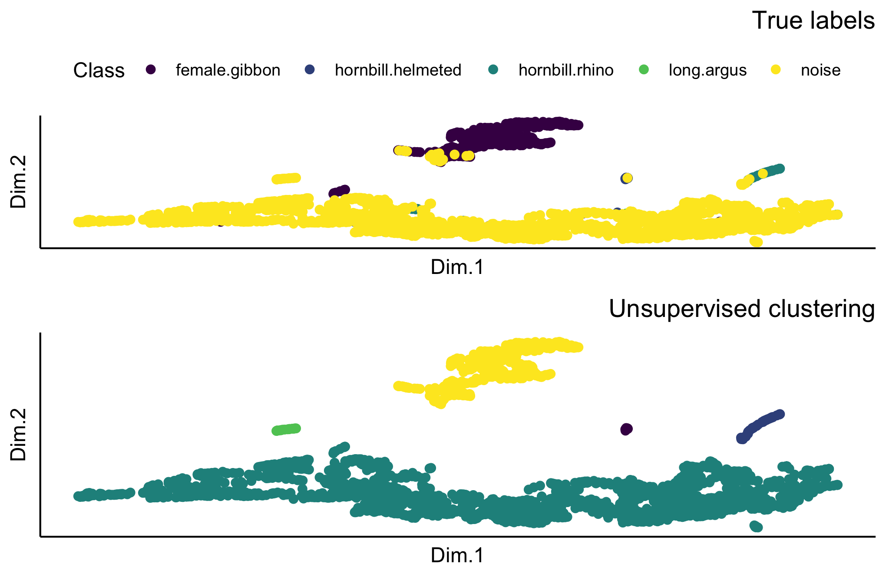

Training Multi-Class CNNs
The script below shows how to train multiple CNN architectures. The number of epochs is set to 20. This script may take a very long time to run, depending on your computer. You can try with the less complex architectures, like AlexNet, VGG16, and ResNet18 if the time to train is prohibitive.
# Location of spectrogram images for training
input.data.path <- 'data/trainingimages/'
# Location of spectrogram images for testing
test.data.path <- 'data/testimages/test/'
# User specified training data label for metadata
trainingfolder.short <- 'danummulticlassexample'
# Specify the architecture type
architectures <- c('alexnet', 'vgg16', 'vgg19', 'resnet18', 'resnet50', 'resnet152')
# We can specify the number of epochs to train here
epoch.iterations <- c(20)
for(a in 1:length(architectures)){
# Function to train a multi-class CNN
gibbonNetR::train_CNN_multi(input.data.path=input.data.path,
architecture =architectures[a],
learning_rate = 0.001,
class_weights = rep((1 / 5), 5),
test.data=test.data.path,
unfreeze.param = TRUE,
epoch.iterations=epoch.iterations,
save.model= TRUE,
early.stop = "yes",
output.base.path = "model_output/",
trainingfolder=trainingfolder.short,
noise.category = "noise")
}Evaluate the performance of multiclass CNNs
The script below will compare the performance of multiple models. Note that the script above saves the performance tables in a nested folder ‘performance_tables_multi’.
performancetables.dir <- "model_output/_danummulticlassexample_multi_unfrozen_TRUE_/performance_tables_multi"
PerformanceOutput <- gibbonNetR::get_best_performance(performancetables.dir=performancetables.dir,
class='female.gibbon',
model.type = "multi",Thresh.val=0)
PerformanceOutput$f1_plot
Extract embeddings
To analyze how the trained model represents data, we extract feature embeddings using extract_embeddings(). These embeddings capture high-level feature representations learned by the model.
ModelPath <- "model_output/_danummulticlassexample_multi_unfrozen_TRUE_/_danummulticlassexample_20_resnet50_model.pt"
result <- gibbonNetR::extract_embeddings(test_input="data/examples/test/",
model_path=ModelPath,
target_class = "female.gibbon")

Unsupervised clustering plot